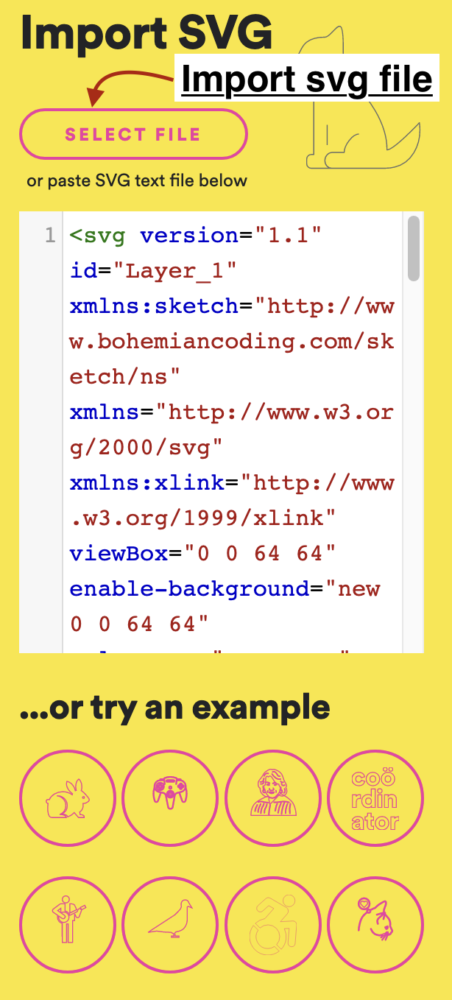
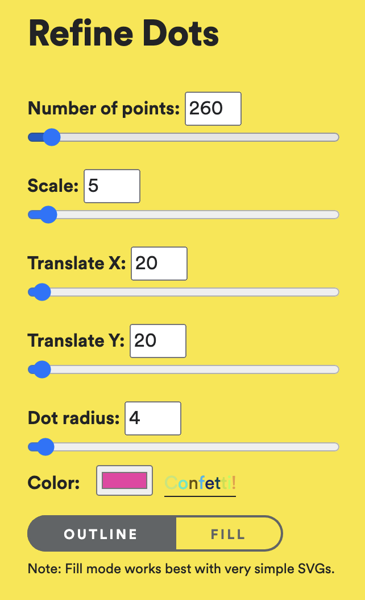
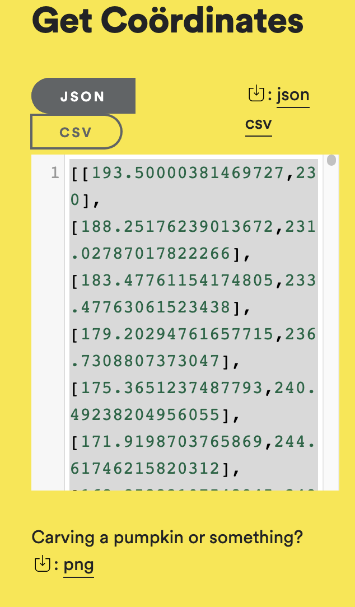

1. Go to
https://spotify.github.io/coordinator/

2. Select proper refine options so that the diagram fits in the screen

3. Copy the co ordinates and paste in the textarea or download and upload the json file
